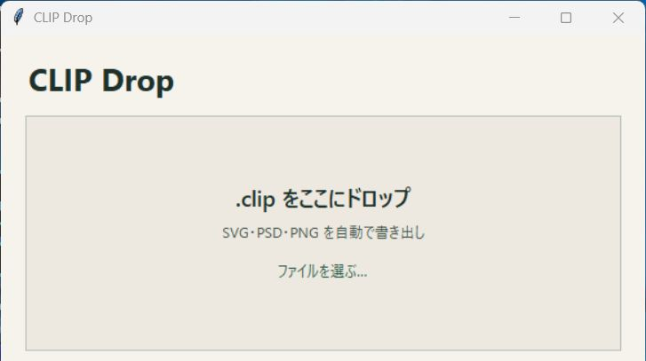
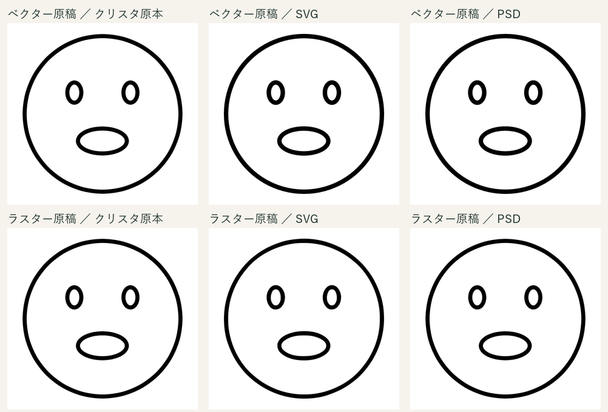

習作・ベータ版
CLIP Drop
クリスタを持っていないWindows PCで .clip を受け取ったときに使えるかもしれない、試作の変換ツールです。原稿をドロップすると、ベクターレイヤーに保存された線を編集できるSVGパスとして取り出します。レイヤー付きPSDと照合用PNGも同時に保存します。
Windows版をダウンロードv{{VERSION}} · Windows 64ビット

使い方
- ZIPをすべて展開します。
- CLIP Drop.exeを起動して、.clipファイルをドロップします。
- 原稿と同じ場所にできた変換結果フォルダーを開きます。
ベクターレイヤーからは中心線を、ラスターレイヤーからは輪郭を取り出します。PSDでは対応する元のレイヤーを別々に保存します。ブラシの質感や可変線幅はPNGで照合できます。
IllustratorではSVGを読み込めます。初版の自動保存はSVG・PSD・PNGに対応します。
線画原稿での検証
